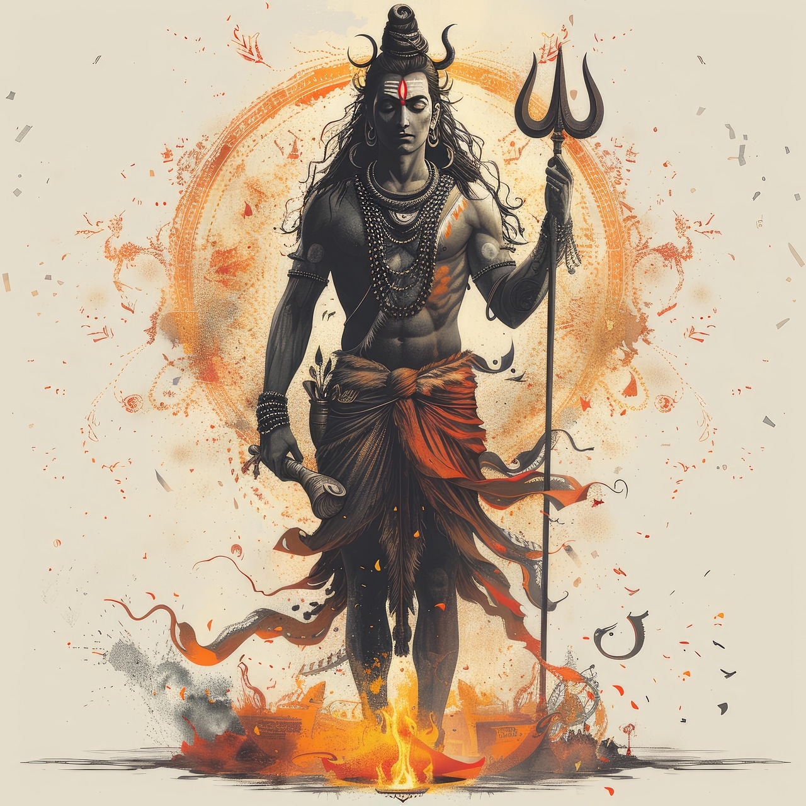
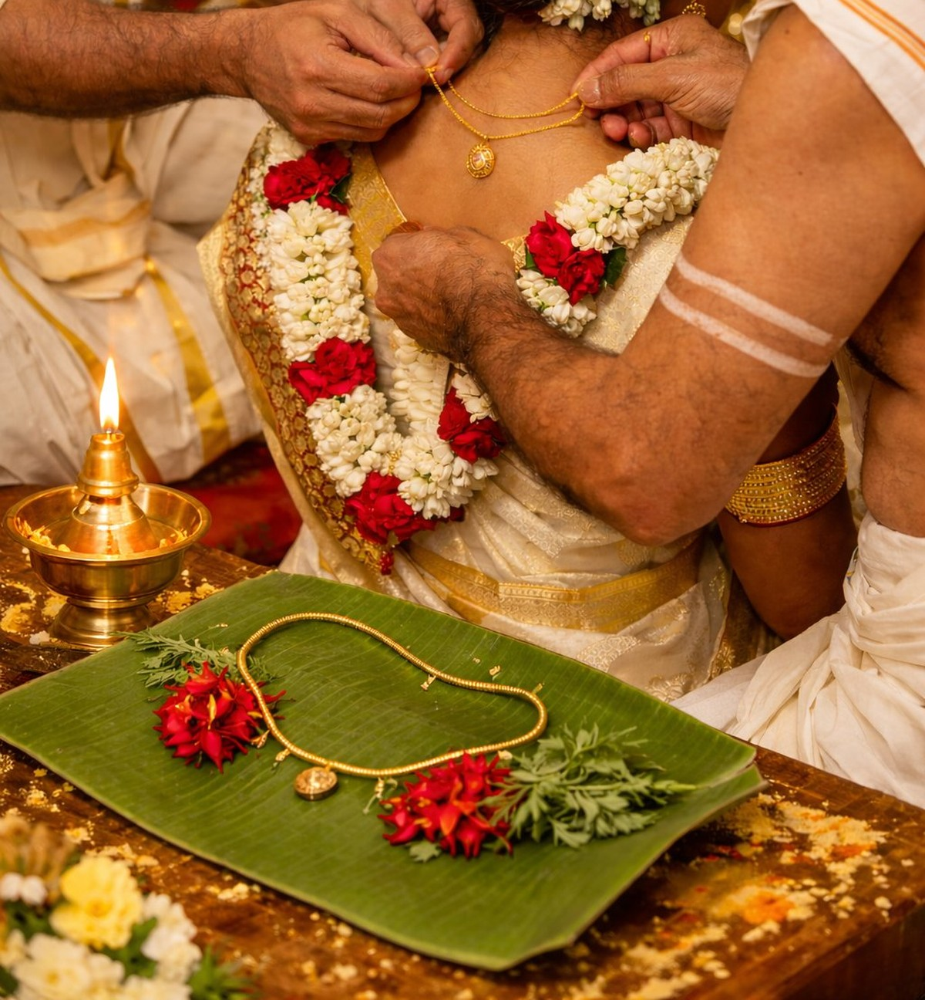
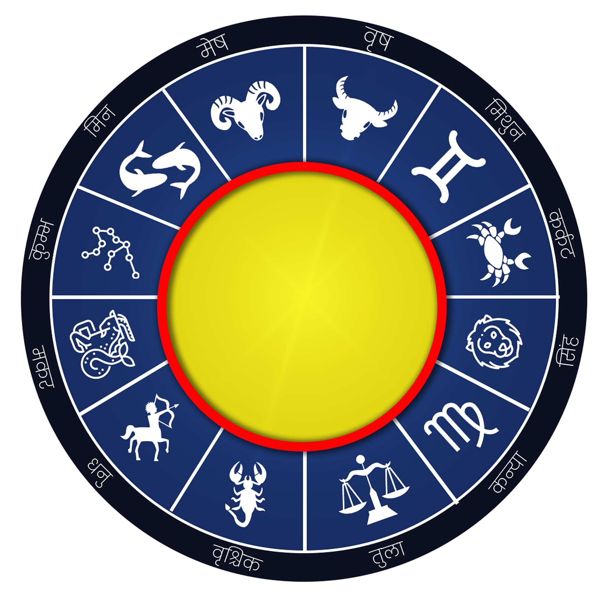

Kerala Traditional Poojas & Homams
Authentic Kerala poojas (pujas) and homams performed with proper Vedic procedures. Services available across Kerala, throughout India, and internationally for homes, temples, and special occasions.
Services Offered


Ganapathi Homam

Bhagavat Seva
Traditional Bhagavat Seva performed with devotion and proper rituals as practiced in Kerala temples and homes.

Sudarshana Homam

Mrithyunjaya Homam

Thali Pooja (Kerala Wedding Ceremony)
Traditional Kerala wedding rituals performed as part of Hindu marriage ceremonies.

Rashi Pooja
Rashi Pooja performed as part of preparations for Ashtamangala Prashnam and traditional astrological guidance.
Additional Pooja (Puja) Services
- Laxminarayana Pooja
- Umamaheswara Pooja
- Saraswathi Pooja
- Vastu Bali / Vastu Pooja
- Karuga Homam
- Thila Homa
- Agora Homam
- Rashi Pooja (Ashtamangala Prashnam preparation)